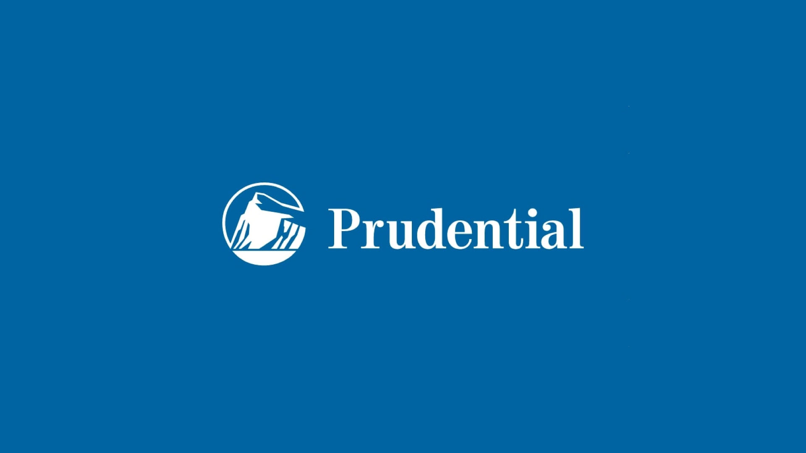
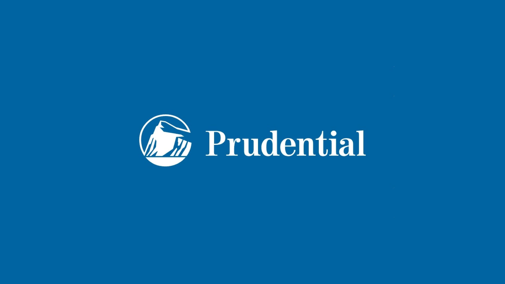

Aplix Advisory
A Aplix Advisory começou recentemente com a provocação de um cliente ao sócio-administrador da Aplix Capital pois não queria ser atendido somnete na XP, então resolveram atender criar a consultoria para atender em todos os lugares.
Com mais de 12 anos de mercado ao longo dos anos foi cada vez mais se fortalecendo e criando novas experiências de mercado. A Aplix Advisory Atende você em qualquer o banco ou instituição financeira que esteja, fornecendo todos os tipos de soluções.
Com um intuito cada vez mais forte de poder servir as pessoas, viemos trazendo á vários anos alegria na casa das pessoas, com os melhores investimentos definidos de forma inteligente e estratégica.